[1] 3 6 3 2 2 6 3 5 4 6Semana 1: Probabilidad y fundamentos de la inferencia estadística
Fundamentos de Probabilidad
¿Qué es la probabilidad?
Podmeos entender la probabilidad de un evento como cuantificar cuán probable es su ocurrencia, comparada con todos los resultados posibles. Al lanzar una moneda, la probabilidad de obtener sello es de \(\frac{1}{2}\), lo que equivale a \(0.5\) o al \(50%\). Esta proporción puede visualizarse como una fracción de veces que se espera que ocurra el evento a lo largo de múltiples repeticiones del experimento.
Podemos visualizar la probabilidad de este evento como una barra que representa el resultado del la moneda que nos interesa, en relación con el total de resultados posibles.
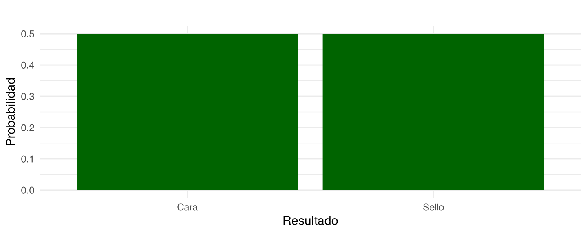
Ambas barras representan la proporción del total de posibles resultados. En términos gráficos, la altura de la barra muestra la probabilidad de que ocurra cada resultado.
Aquí es donde el concepto de área tiene relevancia. La probabilidad de cada número puede visualizarse como el área de la barra en un gráfico, en comparación con el área total que representan todos los posibles resultados. Para la moneda, la probabilidad de obtener un sello es \(\frac{1}{2}\), lo que significa que la barra para el resultado sello ocupa la mitad del área total del gráfico.
Pero, ¿qué pasa cuando no estamos tratando con eventos discretos, como el lanzamiento de una modena, sino con variables que pueden tomar un rango infinito de valores? Por ejemplo, si quisiéramos saber la probabilidad de que la altura de una persona esté entre 160 cm y 170 cm, no podemos representar esta situación con barras, porque los valores pueden ser alturas de 160.1 cm, 160.2 cm, etc.
En estos casos, la probabilidad la representamos con una curva. Al igual que con las barras, el área bajo la curva nos muestra la probabilidad, pero en este caso, la probabilidad se calcula para un rango de valores. La idea sigue siendo la misma: la probabilidad es el área, pero ahora estamos mirando el área bajo una curva en lugar de barras separadas.
Por ejemplo, si estamos interesados en la probabilidad de que una altura esté entre 160 cm y 170 cm, esa probabilidad sería el área bajo la curva entre esos dos puntos. Mientras que en el caso de las barras sabíamos exactamente cuántos resultados posibles había, en el caso de la curva no tenemos un número fijo de resultados, sino un rango, y el área debajo de ese rango nos da la probabilidad de que el valor caiga ahí.
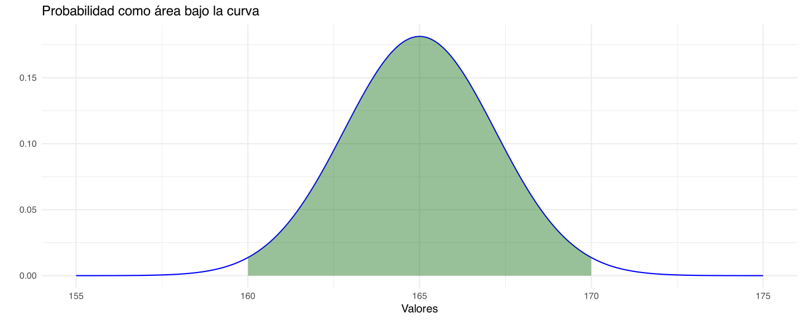
La probabilidad como frecuencia relativa a largo plazo
En situaciones sencillas, el proceso es completamente conocido y la probabilidad puede estimarse de forma intuitiva. Imaginemos un escenario básico: un dado de seis caras numeradas del 1 al 6, y el objetivo es calcular la probabilidad de obtener un 3 al lanzarlo.
Sabemos que el dado tiene seis caras y que cada una tiene la misma probabilidad de aparecer, asumiendo que no está cargado. Si definimos el evento de interés como “obtener un 3”, entonces existe una única cara favorable entre seis posibles resultados.
Por tanto, la probabilidad de obtener un 3 en un solo lanzamiento de dado se puede calcular como:
\[ P(\text{Sacar un 3}) = \frac{\text{Número de resultados favorables}}{\text{Número total de resultados posibles}} = \frac{1}{6} \]
Es decir
\[P(3) = \frac{1}{6} \approx 0.1667\]
Esto significa que, sin necesidad de hacer un solo lanzamiento, ya sabemos que la probabilidad de sacar un 3 es \(\frac{1}{6}\) o aproximadamente 16.67%.
Lo importante aquí es entender que estamos trabajando con un sistema en el que todas las posibles opciones son igualmente probables y están perfectamente definidas. En el caso de un dado de seis caras, ya conocemos todos los posibles resultados y sabemos que no hay ninguna razón para que una cara sea más probable que otra. De la misma forma se puede aplicar a otros casos como:
Si lanzas una moneda, hay dos posibles resultados (cara o cruz), por lo que la probabilidad de obtener “cara” es \(\frac{1}{2}\).
Si sacas una carta de una baraja estándar de 52 cartas, la probabilidad de obtener un as es \(\frac{4}{52}\), porque hay 4 ases en total entre las 52 cartas posibles.
En algunos casos, calcular la probabilidad teórica puede ser bastante sencillo, siempre que sepamos con certeza cuáles son todos los resultados posibles y que estos tengan probabilidades conocidas o igual de probables.
Volviendo al ejemplo de los dados, sabemos que tiene seis caras y que cada una de ellas tiene la misma probabilidad de salir. Esto significa que, en promedio, uno de cada seis lanzamientos del dado debería resultar en un 3. Esta es la expectativa teórica que calculamos partiendo del hecho de que conocemos el proceso físico en su totalidad.
Sin embargo, en la vida real, y especialmente en áreas como las ciencias sociales, muchas veces no tenemos claro cuáles son todos los posibles resultados o no sabemos con precisión sus probabilidades. En estos casos, no podemos calcular directamente la probabilidad teórica porque nos falta información. Debemos encontrar la forma de aproximarnos a ella con la probabilidad experimental
Imagina que tienes dudas sobre si el dado es justo o está trucado. Tal vez sospechas que el dado está manipulado para que el 3 salga con más frecuencia que los otros números. En este caso, no puedes simplemente asumir que la probabilidad de sacar un 3 es \(\frac{1}{6}\), porque no sabes con certeza si todas las caras tienen la misma probabilidad de aparecer. Aquí, la probabilidad teórica se vuelve difícil de calcular, porque no conoces las probabilidades exactas de cada cara. Podemos realizar un experimento y usar la probabilidad experimental para averiguar si el dado realmente está trucado o no.
La probabilidad experimental te permite aproximar lo que podría ser la probabilidad real observando los resultados de muchos lanzamientos del dado. Si lanzas el dado una sola vez y obtienes un 3, no puedes concluir nada. Pero, si lanzas el dado muchas veces, puedes empezar a contar cuántas veces sale cada número y aproximar la probabilidad de que salga un 3.
Podemos empezar con algo sencillo: simular 10 lanzamientos de un dado y ver cuántas veces sale un 3. Para hacerlo, podemos utilizar la función sample, que nos permite generar valores aleatorios dentro de un rango. Usamos set.seed() para establecer un punto de partida fijo en la generación de números aleatorios, de no poner esto se generarían nuevos números aleatorios cada vez que corramos el código. Y finalmente usamos replace = TRUE para permitir que cada lanzamiento del dado sea independiente, permitiendo que cada número (1 a 6) pueda repetirse, tal como ocurre al lanzar un dado real en cada tirada.
Podemos ver los resultados de los 10 lanzamientos. Por ejemplo, si 3 salió tres veces, podemos calcular la probabilidad experimental de obtener un 3.
[1] 0.3Esto nos da la proporción de veces que apareció el 3, que es nuestra probabilidad experimental para esta simulación con 10 lanzamientos.
Incluso podemos graficar los resultados en un gráfico de barras usando ggplot2.
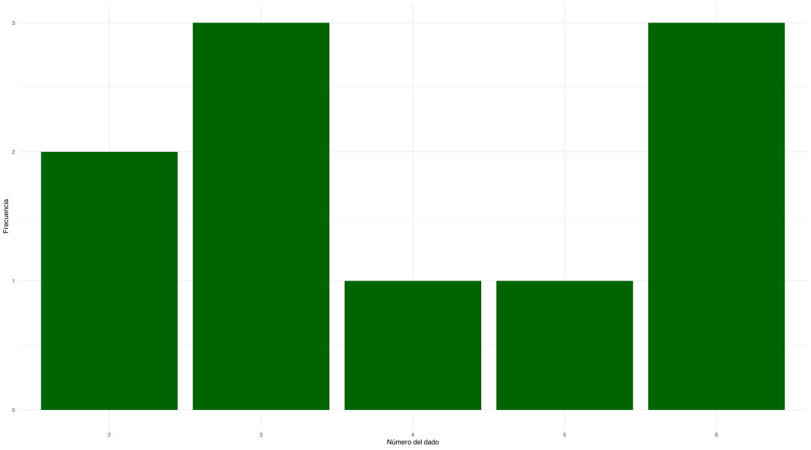
Si el dado no estuviese trucado, esperaríamos que todas las barras fueran más o menos del mismo tamaño, lo que significaría que todos los números del dado tienen la misma probabilidad de salir. Sin embargo, con solo 10 lanzamientos, es probable que algunas barras sean más altas que otras debido a la variabilidad que puede surgir con pocas muestras.
Ahora probemos lanzando el dado 100 veces
[1] 0.15Podemos observar que la probabilidad experimental se empieza a cercar a la teórica. Vamos a graficar estos resultados:
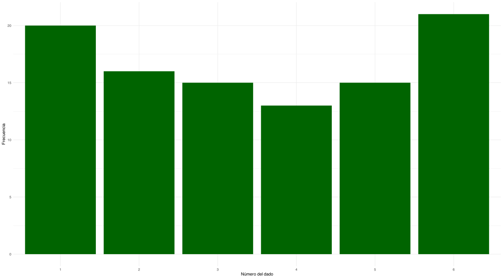
Con 100 lanzamientos, los resultados son más consistentes. Aunque todavía puede haber algo de variación, la frecuencia de aparición de cada número tiende a ser más uniforme y la probabilidad experimental de obtener un 3 debería aproximarse más \(0.1667\), la probabilidad teórica.
Vamos a realizar 10,000 lanzamientos.
[1] 0.1669En este punto, la probabilidad experimental de obtener un 3 debería estar cerca de \(\frac{1}{6}\) o aproximadamente \(0.1667\) y las barras más uniformes. Graficamos nuevamente los resultados:
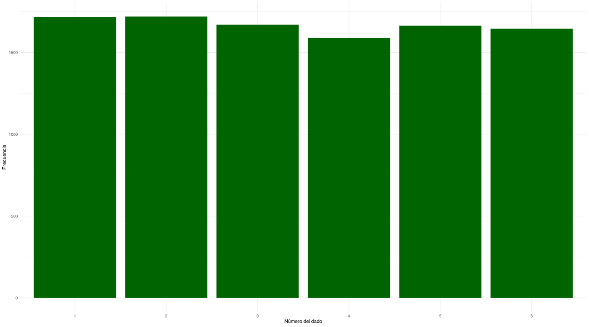
Analicemos los resultados:
- Pocos lanzamientos (10): La probabilidad experimental puede variar bastante debido a que el número de lanzamientos es pequeño y el azar tiene un mayor impacto. En este caso, podríamos ver que algunos números aparecen con más frecuencia de lo esperado simplemente por casualidad.
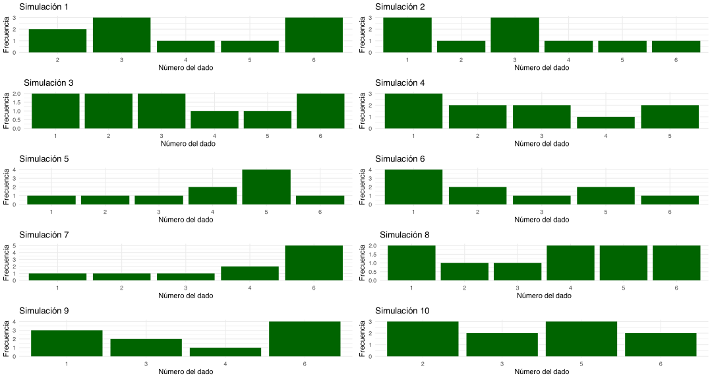
- Lanzamientos moderados (100): Con más lanzamientos, la probabilidad experimental comienza a estabilizarse y se acerca más a la probabilidad teórica, aunque todavía puede haber cierta variación.
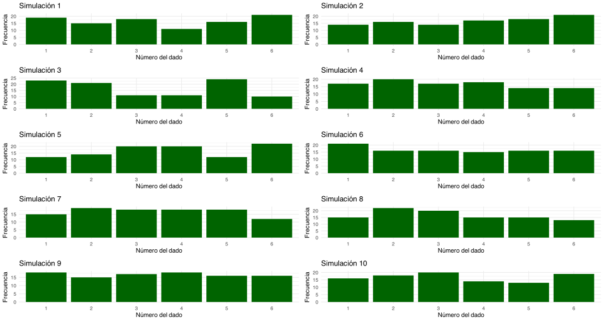
- Muchos lanzamientos (10,000): Con un gran número de lanzamientos, la probabilidad experimental tiende a estabilizarse muy cerca de la probabilidad teórica de \(\frac{1}{6}\).
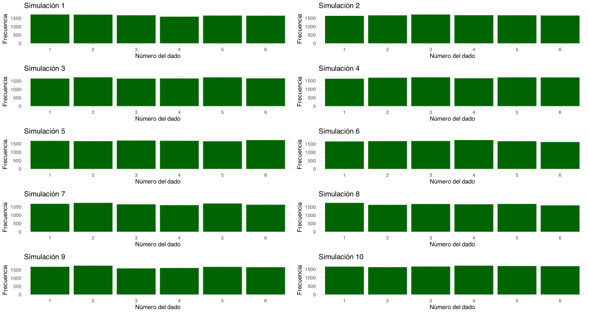
La función principal de la probabilidad experimental es aproximar la probabilidad teórica cuando no estamos seguros de cuál es, o cuando no podemos asumir que todos los resultados son igualmente probables. En este ejemplo, como no estábamos seguros de si el dado estaba trucado o no, usamos los resultados de las simulaciones (los lanzamientos del dado) para aproximar la probabilidad real de obtener un 3.
La probabilidad experimental te da una estimación basada en la observación de lo que ocurre en el mundo real. Cuantas más veces repitas el experimento, más precisa será la aproximación de la probabilidad teórica verdadera. Este proceso se guía por la Ley de los Grandes Números, que establece que mientras más veces realizas un experimento, más cerca estarán los resultados observados de las probabilidades verdaderas.
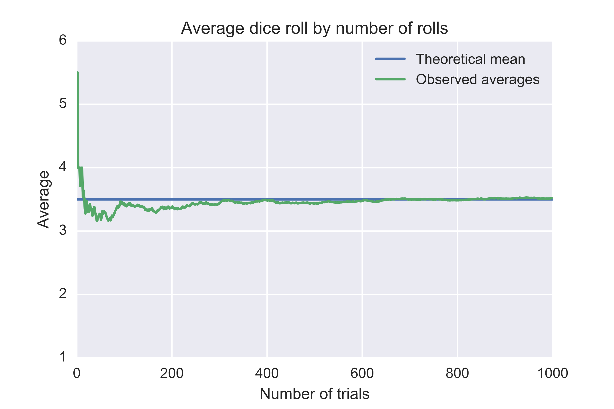
En otras palabras, la precisión de la estimación depende del tamaño de la muestra (el número de lanzamientos). A medida que el tamaño de la muestra aumenta, es decir, lanzamos el dado más veces, la probabilidad experimental se acerca más a la probabilidad teórica. Esto no solo mejora la precisión de nuestra estimación, sino que también aumenta nuestra confianza en que la probabilidad observada es cercana a la real. Un tamaño de muestra mayor reduce la variabilidad y nos permite hacer inferencias más seguras sobre la probabilidad verdadera, ya que la incertidumbre disminuye con más datos. Comprender esto es fundamental para aventurarnos al núcleo de los siguientes capítulos sobre la estadística inferencial, donde usamos una muestra para estimar parámetros desconocidos de una población más grande.
Distribuciones de probabilidad
A medida que realizamos estos lanzamientos del dado y analizamos los resultados, hemos visto que los resultados pueden variar. Sin embargo, con suficientes lanzamientos, empezamos a notar ciertos patrones. En el caso de los dados, por ejemplo, la distribución teórica es uniforme, lo que significa que cada evento (cada cara del dado) tiene la misma probabilidad de ocurrir. Esto es lo que esperamos en un dado justo: que a lo largo de muchos lanzamientos, cada número salga aproximadamente la misma cantidad de veces. Lo mismo ocurre cuando lanzamos una moneda o sacamos una carta de un mazo: cada resultado tiene la misma probabilidad de ocurrencia. A este tipo de distribución la llamamos distribución uniforme, y básicamente indica que, a largo plazo, todos los eventos tienen la misma probabilidad de aparecer.
Podemos visualizar una distribución uniforme en R con el siguiente código:
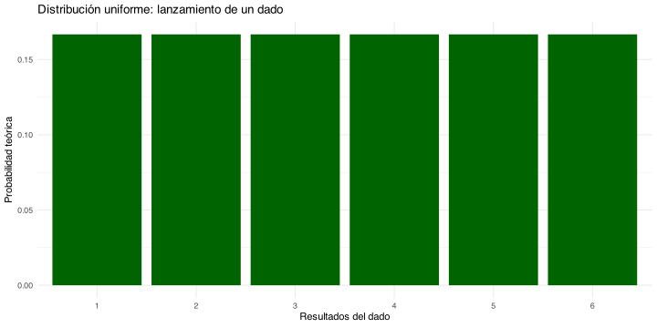
Esta gráfica nos muestra cómo, en un dado justo, cada cara tiene una probabilidad del 16.67% de aparecer.
Sin embargo, no todos los fenómenos que observamos en la realidad presentan resultados con igual probabilidad de ocurrencia. De hecho, en muchos casos, ciertos eventos son más frecuentes o más esperados que otros. A estas formas de representar la incertidumbre alrededor de un fenómeno las llamamos: distribuciones de probabilidad. A través de estas distribuciones, la probabilidad se convierte en una herramienta para describir y comprender el comportamiento de fenómenos en contextos diversos, desde encuestas sociales hasta procesos naturales.
Dependiendo de lo que estemos midiendo, las distribuciones pueden adoptar distintas formas. En algunos casos, los valores tienden a agruparse en torno a un punto central (como en la distribución normal), mientras que en otros interesa contar la frecuencia de eventos dentro de intervalos (como ocurre con la distribución de Poisson) o calcular probabilidades de éxito en ensayos repetidos (como en la binomial).
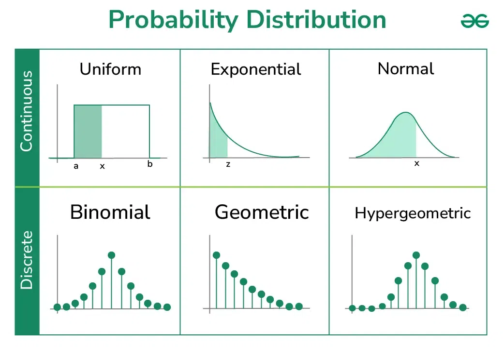
Cada una de estas distribuciones posee propiedades que las hacen adecuadas para representar distintos tipos de fenómenos reales. Una diferencia clave que se refleja también en sus gráficos es si la variable aleatoria es discreta o continua.
Las distribuciones discretas se aplican cuando los resultados posibles son finitos y contables, como en el caso de los lanzamientos de un dado.
En contraste, las distribuciones continuas modelan situaciones en las que los resultados pueden tomar cualquier valor dentro de un rango, como al medir la temperatura o el tiempo entre eventos.
En las distribuciones discretas, los resultados están representados por barras individuales que muestran la frecuencia de cada resultado específico, mientras que en las distribuciones continuas, los resultados se agrupan en rangos y se muestran como una curva. Esto se debe a que, en una distribución continua, los resultados pueden tomar infinitos valores dentro de un intervalo, y en lugar de asignar una probabilidad exacta a un solo valor, calculamos la probabilidad de que un valor caiga dentro de un rango determinado.
En las distribuciones discretas, la probabilidad de cada evento se puede calcular como la altura de la barra en su correspondiente gráfico. En el caso de las distribuciones continuas, la probabilidad de un rango de valores se calcula como el área bajo la curva entre esos valores.
Distribución Binomial
La distribución binomial es una distribución discreta que modela el número de éxitos en una serie de experimentos independientes donde cada uno tiene dos posibles resultados (éxito o fracaso). Por ejemplo, podríamos estar interesados en saber cuántas veces sale “cara” al lanzar una moneda 10 veces. Esta distribución es útil para situaciones en las que repetimos un experimento varias veces bajo las mismas condiciones.
La fórmula para la probabilidad binomial es:
\[ P(X = k) = \binom{n}{k} p^k (1 - p)^{n - k} \]
Donde:
\(n\) es el número de intentos (lanzamientos, ensayos).
\(k\) es el número de éxitos.
\(p\) es la probabilidad de éxito en cada intento.
Aquí \(\binom{n}{k}\) es el coeficiente binomial, que representa el número de formas en que se pueden elegir \(k\) éxitos entre \(n\) ensayos.
En R, podemos simular la distribución binomial de la siguiente manera:
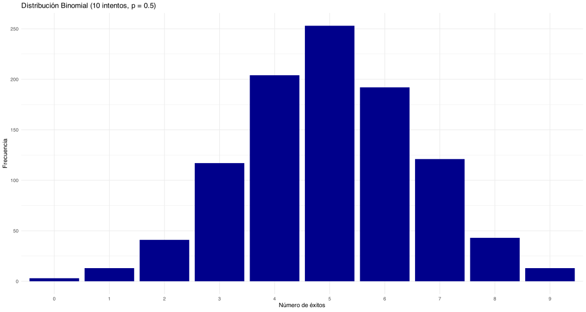
Cada barra muestra la frecuencia con la que se obtuvo un número específico de éxitos (de 0 a 10) en 1,000 simulaciones de una distribución binomial con 10 intentos y probabilidad de éxito 0.5.
Podemos observar cómo cambia la forma de la distribución en función de la probabilidad de éxito:
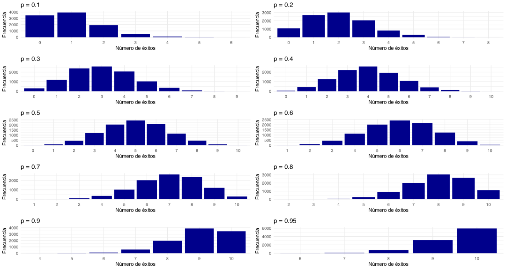
Podemos ver claramente cómo la forma de la distribución cambia con la probabilidad de éxito \(p\). Con valores bajos de \(p\) (cercanos a 0.1), la mayor parte de los ensayos tienen pocos éxitos, lo que genera una distribución sesgada hacia la izquierda. A medida que \(p\) aumenta, la distribución se vuelve más simétrica, y con valores altos (cercanos a 0.9), la distribución se concentra en el extremo de mayores éxitos.
La distribución binomial es ideal para modelar el número de éxitos en experimentos como encuestas, pruebas de productos o cualquier proceso donde haya dos posibles resultados (sí/no, éxito/fracaso).
Distribución de Poisson
La distribución de Poisson es una distribución discreta que modela el número de eventos que ocurren en un intervalo de tiempo o espacio dado, bajo el supuesto de que estos eventos ocurren de manera independiente y con una tasa constante. Un ejemplo clásico de su uso es el número de llamadas que recibe una central telefónica en una hora.
La fórmula para la probabilidad de Poisson es:
\[ P(X = k) = \frac{\lambda^k e^{-\lambda}}{k!} \]
Donde:
\(\lambda\) es la tasa promedio de ocurrencia de eventos en un intervalo (número promedio de eventos por unidad de tiempo).
\(k\) es el número de eventos que queremos calcular la probabilidad de que ocurran.
En R, podemos simular la distribución de Poisson de la siguiente manera:
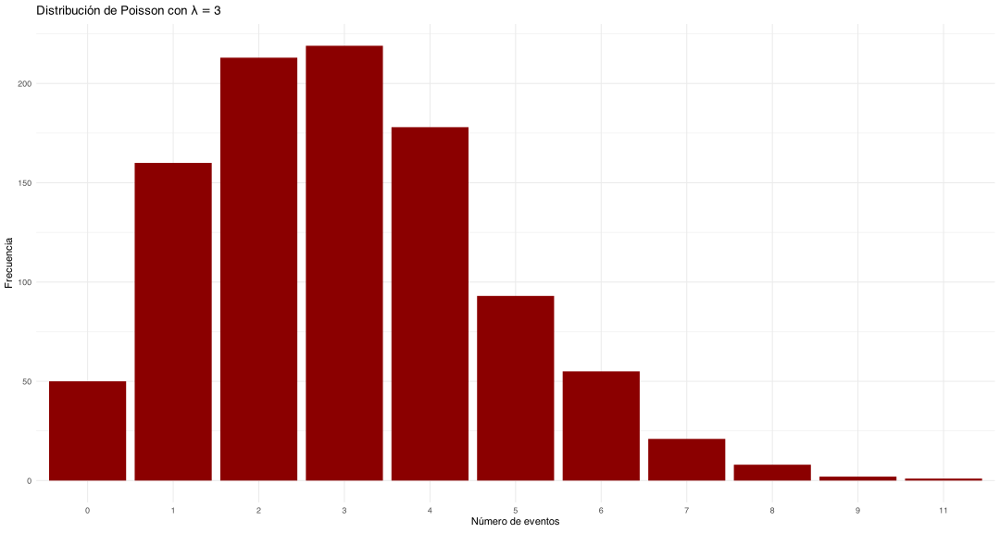
Cada barra representa la frecuencia de ocurrencia de un número específico de eventos (cuántas veces ocurrió) en 1,000 simulaciones de una distribución de Poisson con un valor promedio de lambda = 3.
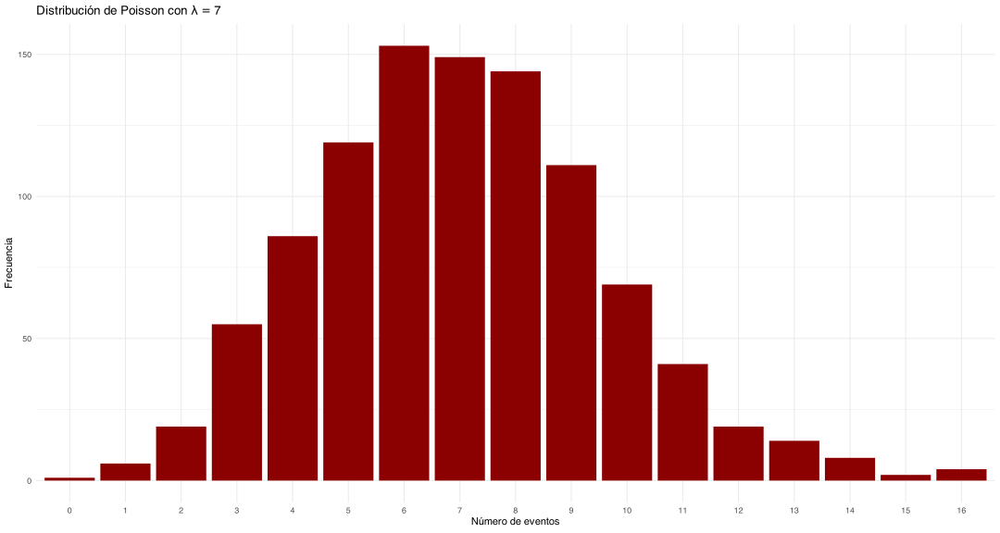
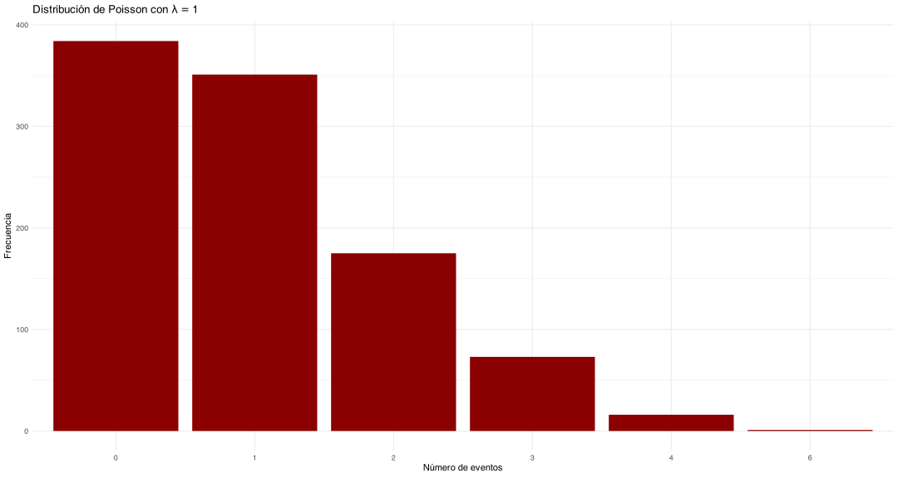
Podemos realizar la comparación de la forma de la distribución de Poisson según diferentes valores de \(\lambda\)
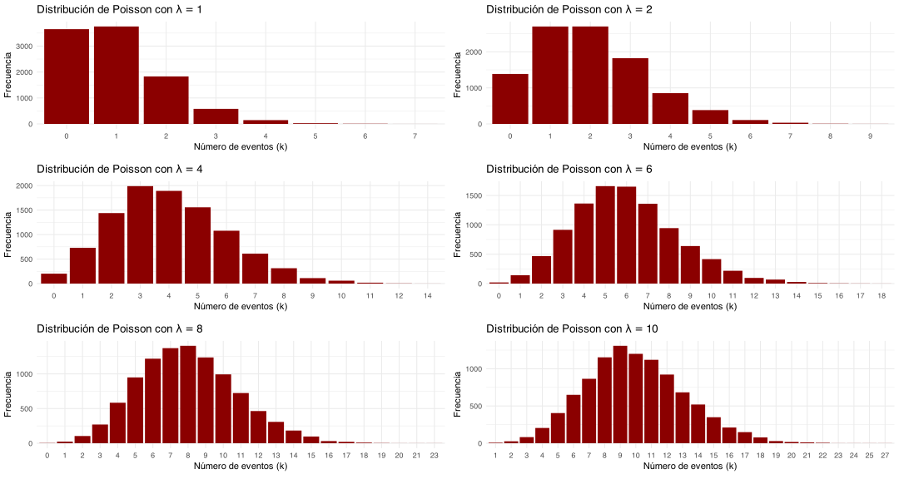
Podemos ver cómo la distribución de Poisson cambia según el valor de \(\lambda\). Para valores pequeños de \(\lambda\), la mayor parte de los eventos ocurren en el rango de pocos sucesos (por ejemplo, entre 0 y 2). A medida que \(\lambda\) aumenta, la distribución se desplaza hacia valores mayores, reflejando que ocurren más eventos en ese intervalo.
Distribución Normal
La distribución normal, también conocida como la “curva de campana”, es una distribución continua que describe cómo se distribuyen los datos alrededor de un valor central (la media). Se caracteriza por ser simétrica alrededor de la media, con valores más probables cercanos a la media, y menos probables a medida que nos alejamos de ella. Es una de las distribuciones más importantes en estadística.
La fórmula para la distribución normal es:
\[ f(x) = \frac{1}{\sigma \sqrt{2\pi}} e^{-\frac{(x - \mu)^2}{2\sigma^2}} \]
Tenemos dos valores que modifican el comportamiento de la distribución:
\(\mu\) es la media de la distribución, donde se agrupan los datos.
\(\sigma\) es la desviación estándar, que describe la dispersión de los valores con respecto a la media.
Hay varias situaciones que suelen describirse bajo una distribución normal, debido a que muchos fenómenos naturales y procesos en la vida cotidiana tienden a agruparse alrededor de un valor promedio, con menos casos en los extremos.
Altura de personas en una población: En una muestra grande de personas, la altura suele distribuirse normalmente. La mayoría de las personas estarán cerca de la altura promedio, con pocas personas siendo extremadamente altas o bajas.
Puntajes de exámenes: En pruebas como exámenes de admisión, los puntajes suelen seguir una distribución normal, con la mayoría de los estudiantes obteniendo puntajes cercanos al promedio y menos estudiantes con puntajes muy altos o muy bajos.
Peso de frutas y verduras: En un lote grande de frutas o verduras (por ejemplo, manzanas), el peso de cada pieza tiende a distribuirse normalmente debido a las variaciones naturales en el crecimiento de los alimentos.
Peso de productos producidos en masa: En una fábrica, el peso de productos como latas de refresco o paquetes de alimentos tiende a seguir una distribución normal debido a pequeñas variaciones en el proceso de producción.
Temperatura corporal: La temperatura corporal humana (aproximadamente 37°C) en una población sana sigue una distribución aproximadamente normal, con la mayoría de los individuos cercanos a la media y menos en los valores extremos.
Podemos representarla de forma gráfica:
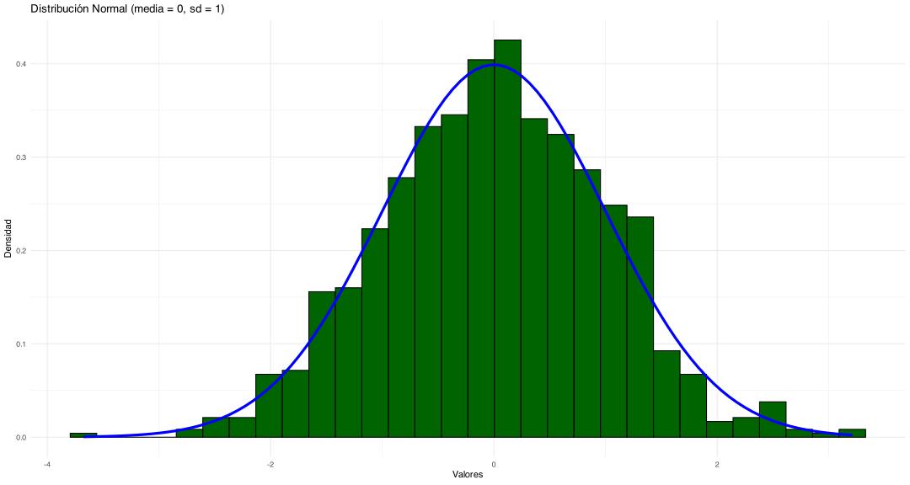
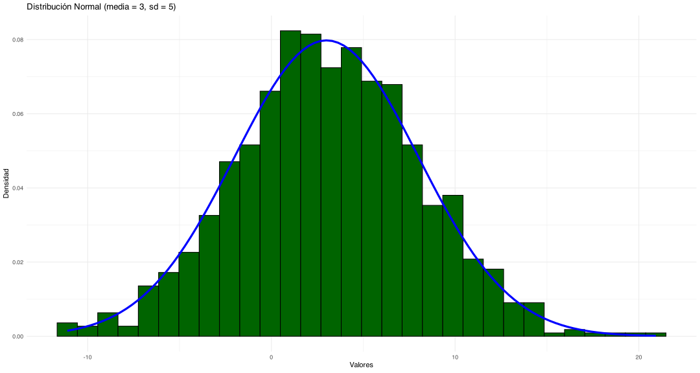
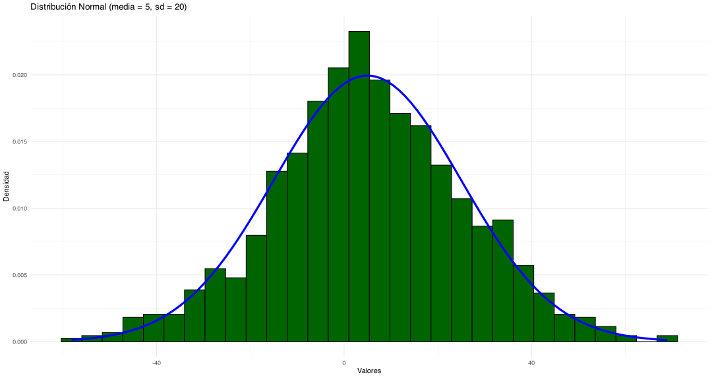
Comparación de la forma de la distribución normal según diferentes medias y desviaciones estándar:
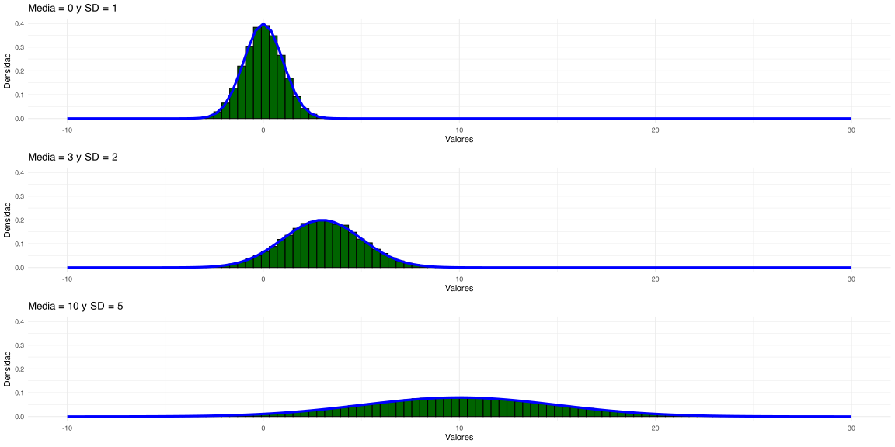
A medida que observamos las tres distribuciones normales, podemos notar cómo la media y la desviación estándar afectan su forma. La media determina el centro de la curva, es decir, el valor alrededor del cual se agrupan los datos. En los gráficos, vemos cómo la media se desplaza de 0 a 10, moviendo el pico de la distribución hacia la derecha.
Por otro lado, la desviación estándar controla la dispersión de los datos: una desviación estándar baja (SD = 1) concentra los valores cerca de la media, mientras que una desviación estándar mayor (SD = 5) extiende la curva, creando una distribución más ancha y plana. A pesar de estos cambios, todas las distribuciones permanecen simétricas, característica fundamental de la distribución normal.
La distribución normal en detalle
Si nos vamos a embarcar en la inferencia, sin lugar a duda la distribución más importante es la distribución normal y por ello merece su propio apartado en donde describamos sus características.
Su forma es simétrica y tiene apariencia de campana. Esta distribución se define por dos parámetros clave: la media (\(\mu\)) y la desviación estándar (\(\sigma\)). La media es el valor central donde la mayor parte de los datos se agrupan, mientras que la desviación estándar mide qué tan dispersos están los datos alrededor de la media.
La media (\(\mu\)) determina la posición de la curva en el eje horizontal. Si la media cambia, la curva simplemente se desplaza hacia la derecha o izquierda, pero su forma permanece igual. Por otro lado, la desviación estándar (\(\sigma\)) afecta la forma de la curva. Una desviación estándar mayor produce una curva más ancha y baja, lo que indica que los datos están más dispersos. En cambio, una desviación estándar menor hace que la curva sea más estrecha y alta, lo que refleja que los datos están más concentrados alrededor de la media.
Una propiedad fundamental de la distribución normal es que, sin importar los valores específicos de la media y la desviación estándar, las probabilidades de encontrar datos dentro de ciertos rangos de desviaciones estándar desde la media son siempre las mismas. Lo denominamos la regla empírica:
Aproximadamente el 68% de los datos se encuentran dentro de 1 desviación estándar de la media (\(\mu \pm 2 \sigma\)) el 95% dentro de 2 desviaciones estándar (\(\mu \pm 2 \sigma\)) 99.7% dentro de 3 desviaciones estándar (\(\mu \pm 3 \sigma\)).
Lo característico de la regla empírica es que se cumple consistentemente en cualquier distribución normal, sin importar los valores específicos de la media o la desviación estándar. Ya sea que la media sea 5 o 50, o que la dispersión sea mayor o menor, la proporción de datos que se concentra dentro de 1, 2 o 3 desviaciones estándar alrededor de la media se mantiene aproximadamente constante. Aproximadamente:
68% de los datos estarán dentro de 1 desviación estándar de la media.
95% dentro de 2 desviaciones estándar.
99.7% dentro de 3 desviaciones estándar.
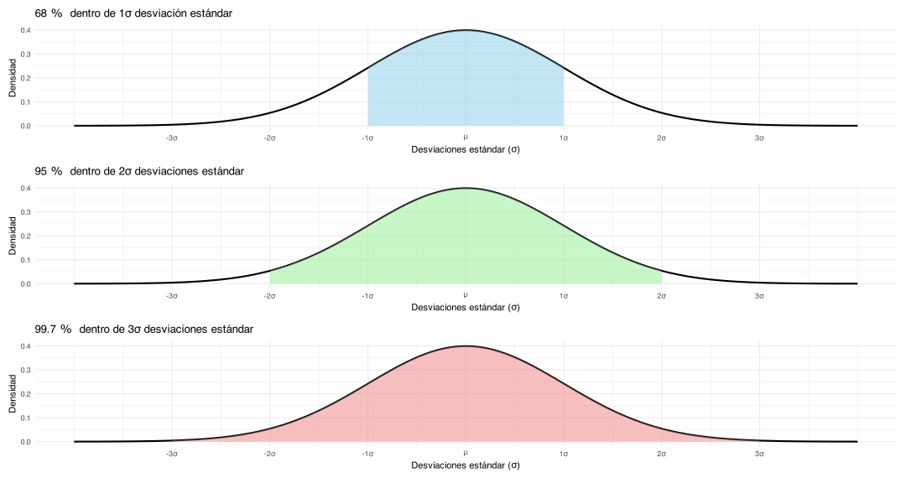
Puedes interactuar con la distribución normal en la Datáfora Interactiva: [Click Aquí]
O usa el QR:

Dirígete a la pestaña Distribución normal
Funciones para distribuciones de probabilidad
Cuando realizamos análisis estadístico, es común trabajar con estas distribuciones de probabilidad. Al fin y al cabo, estas distribuciones buscan modelar fenómenos reales, como la altura de las personas, el número de clientes que llegan a un restaurante o el número de éxitos en una serie de intentos. Las funciones dxxx, pxxx, qxxx y rxxx en R permiten explorar estas distribuciones, cada una respondiendo a preguntas estadísticas fundamentales:
dxxx: Calcula la densidad de probabilidad o probabilidad exacta de un valor.pxxx: Calcula la probabilidad acumulada, es decir, la probabilidad de observar valores menores o iguales a un valor dado.qxxx: Encuentra el valor (cuantil) asociado a una probabilidad acumulada.rxxx: Genera números aleatorios que siguen una distribución específica.
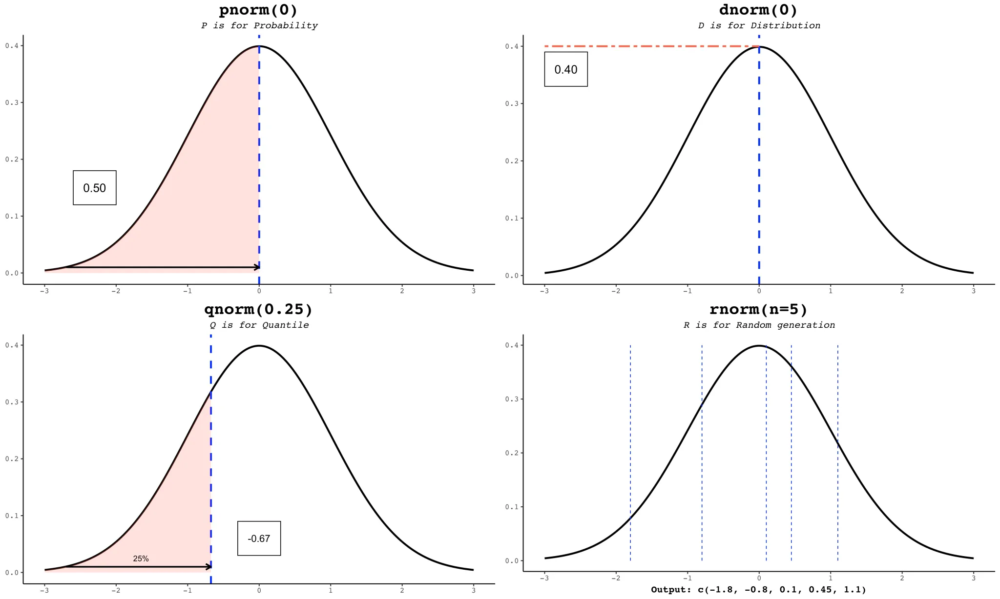
Extraído de: https://diggingdeeperwithstats.wordpress.com/2021/05/21/visual-guide-to-pnorm-dnorm-qnorm-and-rnorm-functions-in-r/
| Como ya sabes, la distribución normal describe fenómenos continuos simétricos. En la vida real, puede modelar características como la altura de las personas. |
| Imaginemos que las altura de los hombres adultos en una región siguen una distribución normal con media de 175 cm y desviación estándar de 10 cm. |
| ::: {.cell} |
| ::: |
- ¿Qué tan común es encontrar a alguien que mide exactamente 180 cm? (
dnorm) La densidad de probabilidad nos dice cuán probable es observar una altura cercana a 180 cm.
[1] 0.03520653El valor es 0.035 lo que indica que es menos probable encontrar esta altura comparada con valores más cercanos a la media (175 cm).
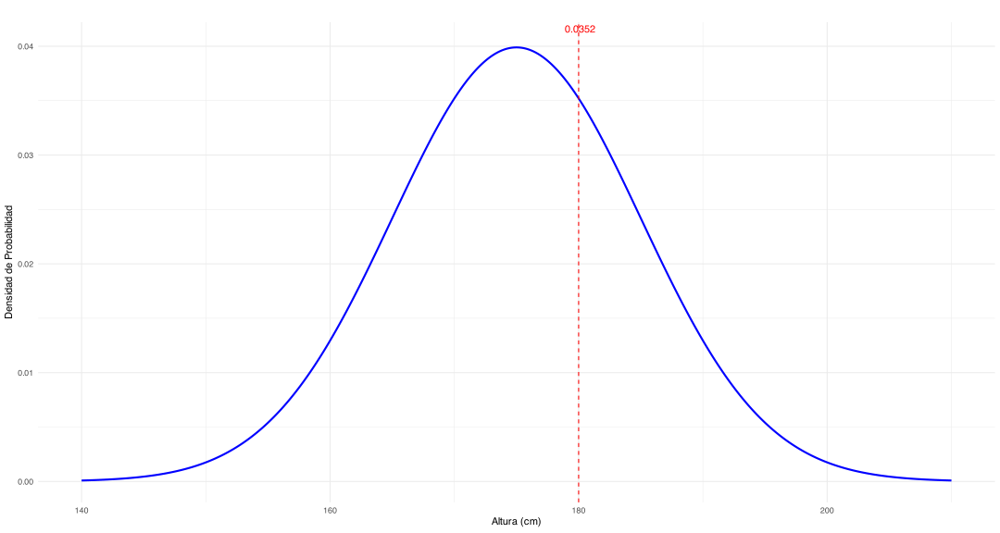
- ¿Qué porcentaje de hombres miden menos de 180 cm? (
pnorm)
[1] 0.6914625La probabilidad acumulada hasta \(x = 180\) es, aproximadamente, 69.15%. Esto significa que aproximadamente el 69.15% de los hombres tienen una altura menor o igual a 180 cm.
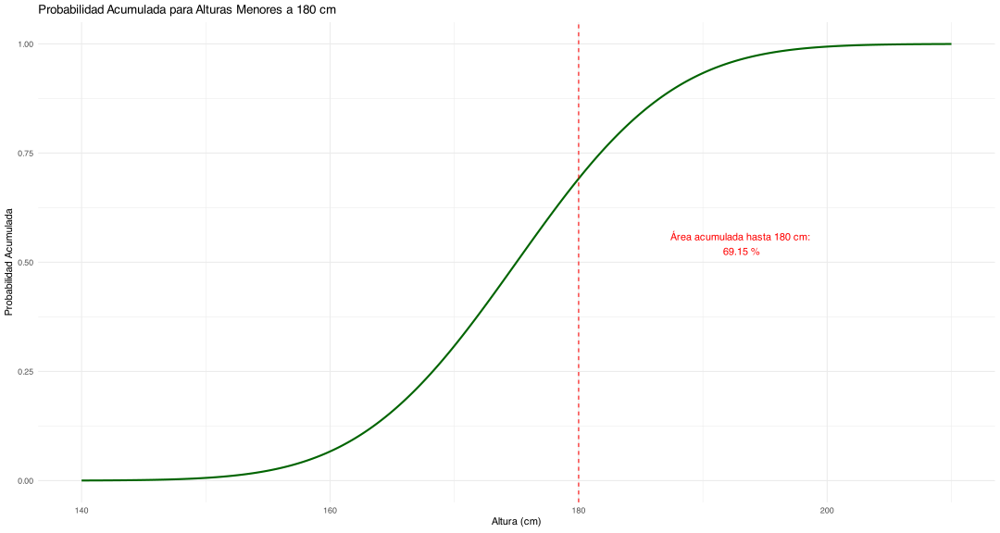
Este porcentaje se calcula sumando todas las probabilidades desde el extremo más bajo de la distribución (por ejemplo, 140 cm o menos) hasta los 180 cm. Es importante entender que esto no es una probabilidad puntual como la que obtendríamos con dnorm, sino una acumulación de probabilidades. El gráfico muestra cómo las probabilidades se acumulan a medida que aumentamos la altura. En el eje horizontal tenemos los valores de altura (en cm), y en el eje vertical, las probabilidades acumuladas. A medida que las alturas aumentan, la probabilidad acumulada también crece, lo que refleja que estamos “acumulando” más población bajo ese umbral. En 180 cm, el punto destacado en el gráfico, la probabilidad acumulada es aproximadamente 69.15%, lo que significa que el 69.15% de las personas mide 180 cm o menos.
- ¿Qué altura corresponde al percentil 90? (
qnorm)
[1] 187.8155El percentil 90 corresponde a una altura, por ejemplo, de 187.81 cm. Esto significa que el 90% de los hombres en esta muestra mide menos de 187.81 cm, y solo el 10% mide más.
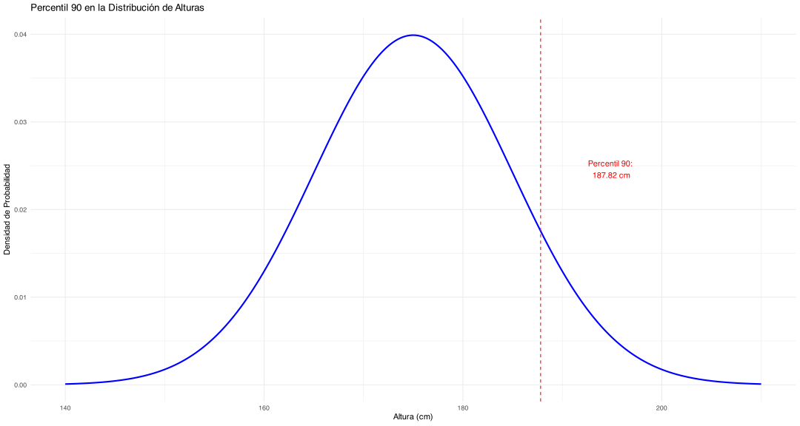
- ¿Cómo generar una muestra simulada de 100 alturas? (
rnorm)
[1] 183.1663 181.8145 189.9282 160.4299 170.1698 186.0007El conjunto generado contiene alturas simuladas de una muestra de 100 personas, todas siguiendo una distribución normal con media de 175 cm y desviación estándar de 10 cm.
Aunque nos estamos centrando en la distribución normal, las funciones dxxx, pxxx, qxxx y rxxx son igualmente aplicables a otras distribuciones importantes como la binomial (dbinom, pbinom, qbinom, y rbinom) o la poisson (dpois, ppois, qpois, y rpois).
| Función | Descripción | Pregunta que Responde | Argumentos en R |
|---|---|---|---|
dnorm |
Calcula la densidad de probabilidad en un valor dado. | ¿Qué tan común es observar este valor específico? | dnorm(x, mean, sd)x: valormean: mediasd: desviación estándar |
pnorm |
Calcula la probabilidad acumulada hasta un valor específico. | ¿Qué porcentaje de la población está por debajo de este valor? | pnorm(q, mean, sd)q: valor cuantilmean: mediasd: desviación estándar |
qnorm |
Devuelve el valor asociado a una probabilidad acumulada dada. | ¿Qué valor corresponde a este percentil o probabilidad acumulada? | qnorm(p, mean, sd)p: probabilidad acumuladamean: mediasd: desviación estándar |
| Función | Descripción | Pregunta que Responde | Argumentos en R |
|---|---|---|---|
rnorm |
Genera números aleatorios que siguen una distribución normal con parámetros definidos. | ¿Cómo puedo simular datos que sigan esta distribución? | rnorm(n, mean, sd)n: número de valoresmean: mediasd: desviación estándar |
Probabilidades y valor z
En una distribución normal, la probabilidad de que un valor caiga en un cierto rango está representada por el área bajo la curva. Por ejemplo, la probabilidad de que un valor esté por debajo de la media es del 50%, ya que la curva normal es simétrica alrededor de la media.
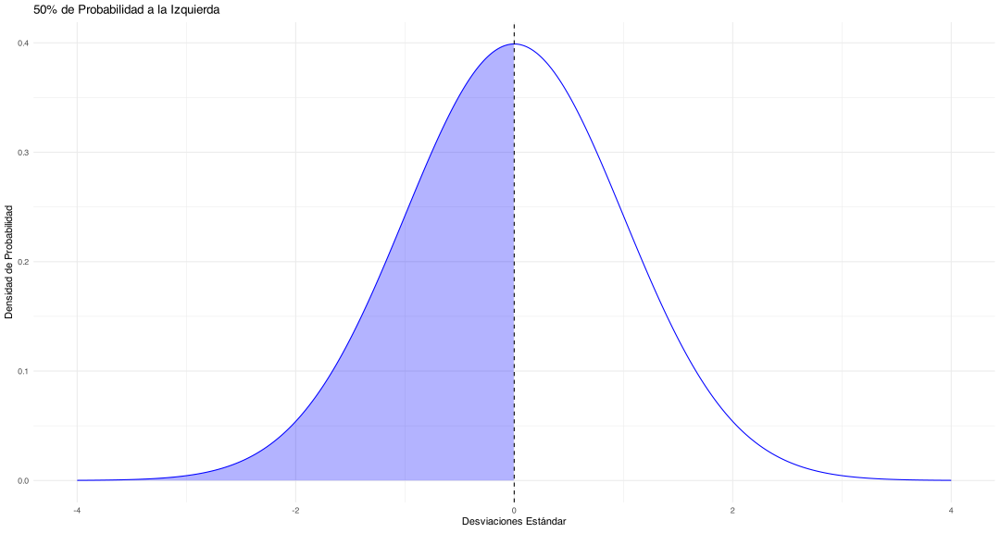
Ahora bien, en estadística, muchas veces necesitamos medir cuán lejos está un valor de la media en términos de desviaciones estándar. A esto lo llamamos valor z. El valor z nos indica cuántas desviaciones estándar por encima o por debajo de la media se encuentra un dato específico en la distribución normal sin importar la media o la disviación estandar que tengan.
Así, el valor z es simplemente una forma de estandarizar los datos en una distribución normal. Nos dice cuántas desviaciones estándar (\(\sigma\)) está un valor (\(x\)) por encima o por debajo de la media (\(\mu\)). La fórmula es:
\[z = \frac{x - \mu}{\sigma}\]
- Si el valor z es positivo, significa que el valor está por encima de la media.
- Si el valor z es negativo, el valor está por debajo de la media.
Por ejemplo, si un valor tiene un z = 1, significa que está una desviación estándar por encima de la media; si tiene un z = -2, está dos desviaciones estándar por debajo de la media.
Recordemos que las áreas bajo la curva normal corresponden a probabilidades. Por ejemplo:
El área total bajo la curva es igual a 1 (o el 100%).
El área a la izquierda de (z = 0) (la media) es 0.5, lo que significa que el 50% de los datos están por debajo de la media.
Cuando queremos encontrar el valor z para una probabilidad dada, estamos básicamente preguntando: “¿Cuántas desviaciones estándar debo alejarme de la media para que el área acumulada bajo la curva normal sea igual a una probabilidad específica?”
Pongamos un ejemplo. Supongamos que queremos encontrar el valor z que corresponde a una probabilidad específica. Queremos encontrar cuántas desviaciones estándar necesitamos movernos desde la media para que el 95% de los datos queden a la izquierda de ese valor. Usamos la función qnorm() en R, que toma como argumento una probabilidad y devuelve el valor z correspondiente:
[1] 1.644854El resultado será un valor z positivo (aproximadamente 1.645), que indica que el 95% de los datos están por debajo de aproximadamente 1.645 desviaciones estándar por encima de la media.
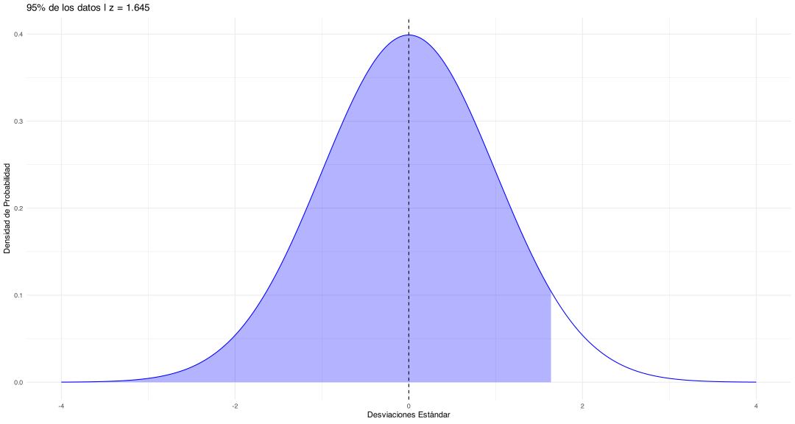
Ahora, supongamos que queremos el valor z para una probabilidad del 5%, es decir, queremos saber cuántas desviaciones estándar hay entre la media y un punto que deja el 5% de los datos a la izquierda (en la cola izquierda de la distribución). Para esto usamos:
[1] -1.644854Este valor z será negativo (aproximadamente -1.645), lo que indica que este punto está a 1.645 desviaciones estándar por debajo de la media.
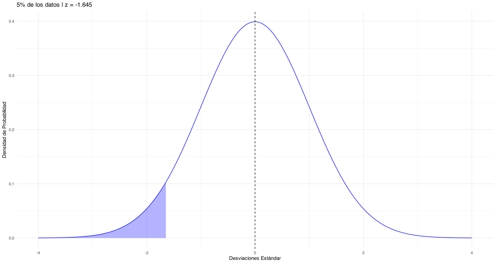
Recordemos que la curva normal es símetrica. Entocnes, si queremos encontrar los valores z que dejan un 95% de los datos en el centro de la distribución, dejamos un 2.5% en cada cola (5% dividido entre 2). Calculamos ambos extremos:
[1] -1.959964[1] 1.959964Los resultados serán aproximadamente -1.96 y 1.96, lo que significa que el 95% de los datos se encuentran entre -1.96 y 1.96 desviaciones estándar de la media.
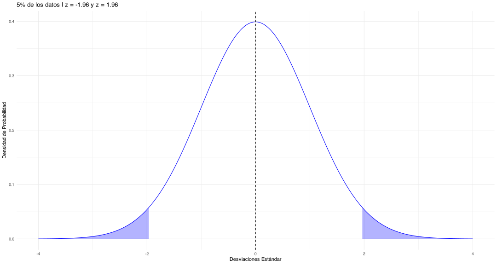
El valor \(z\) es una medida que nos dice cuántas desviaciones estándar está un dato de la media en una distribución normal. Para encontrar un valor z que corresponda a una probabilidad específica (o área bajo la curva). Usando esta lógica también podemos dar un valor e identificar la probabilidad de encontrarnos un mayor o menor valor.
Imagina que estamos trabajando con las alturas de personas y sabemos que las alturas siguen una distribución normal con una media (\(\mu\)) de 170 cm y una desviación estándar (\(\sigma\)) de 10 cm.
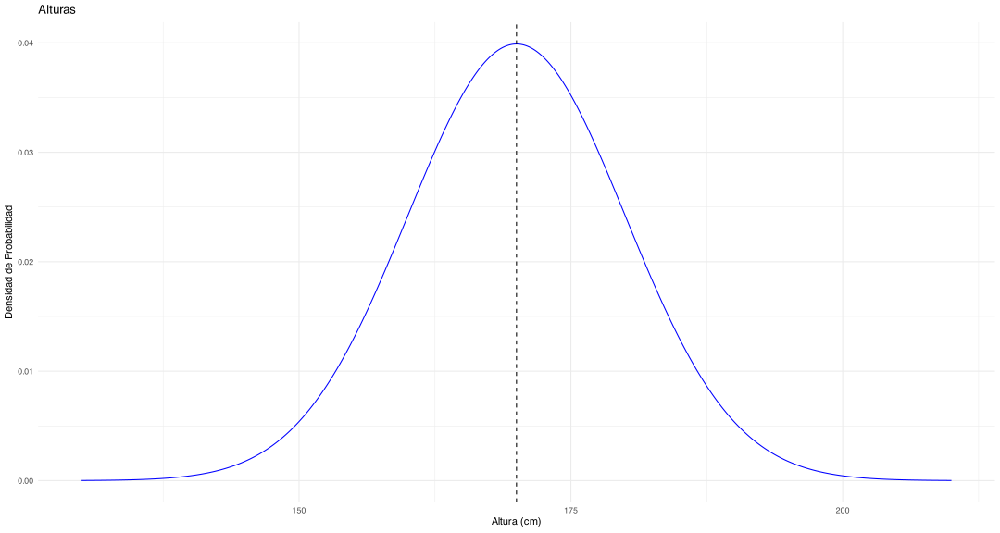
En este caso, queremos saber la probabilidad de que una persona mida menos de 180 cm. Lo que necesitamos es calcular el área bajo la curva normal desde la izquierda hasta 180 cm.
Primero, podemos calcular el valor z, que indica cuántas desviaciones estándar está esa altura de la media: \[z = \frac{x - \mu}{\sigma}\]
Donde:
\(x = 180\) cm,
\(\mu = 170\) cm,
\(\sigma = 10\) cm.
Entonces:
\[z = \frac{180 - 170}{10}\] \[z = 1\]
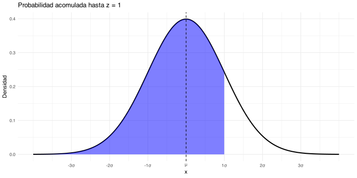
Al ser \(z = 1\). En R, puedes hacer todo el cálculo con la función pnorm() , que directamente te da la probabilidad acumulada para un valor \(x\).
[1] 0.8413447También podemos especificar la media y las desviación estándar y el valor deseado, dándonos el mismo resultado.
[1] 0.8413447Es decir, una probabilidad del 84.13%
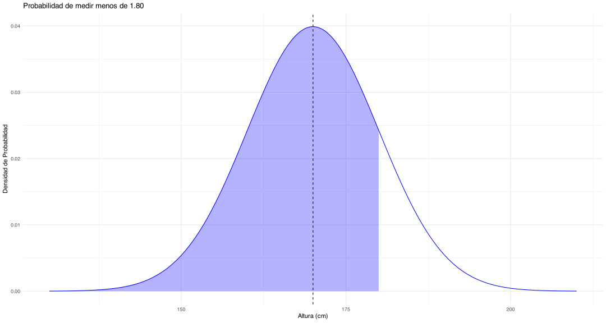
Si ahora queremos saber la probabilidad de que alguien mida más de 190 cm, hacemos lo siguiente:
[1] 0.02275013Aquí restamos de 1 porque pnorm() nos da la probabilidad de estar por debajo de 190 cm, pero queremos saber la probabilidad de estar por encima.
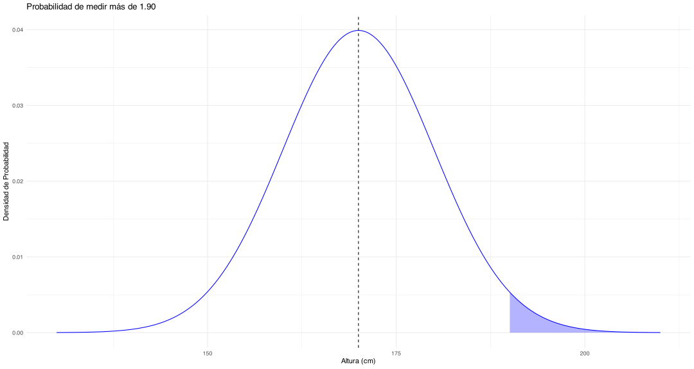
Para calcular la probabilidad de que alguien esté dentro de un rango, en este caso entre 160 cm y 180 cm, necesitamos calcular la probabilidad acumulada hasta 180 cm y restarle la probabilidad acumulada hasta 160 cm:
[1] 0.6826895Esto nos dará la probabilidad de que una persona mida entre 160 cm y 180 cm.
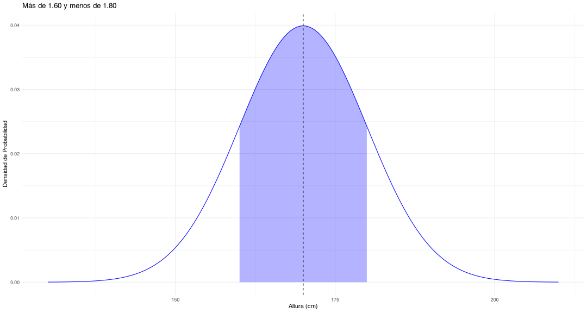
Distribución muestral
Perfecto, ahora que ya entendemos las bases de la probabilidad y la distribución normal, es momento de ponernos manos a la obra y ver como podemos integrarlo en la inferencia.
Recuerdas que vimos en el curso anterior que cuando extraemos una muestra de una población, calculamos resúmenes numéricos como la media, la desviación estándar o la proporción, que nos dan información sobre el comportamiento de nuestras variables. Sin embargo, como nuestras muestras representan solo una fracción de la población, es natural que las métricas obtenidas de diferentes muestras varíen. Debemos ser capaces de poder representar esa variación, para ello tenemos la distribución muestral: se refiere a la distribución de un estadístico (por ejemplo, la media o la proporción) calculado a partir de múltiples muestras extraídas de la misma población.

El propósito de una distribución muestral es comprender cómo varía un estadístico (como la media) cuando repetimos el proceso de muestreo múltiples veces. En estadística, pocas veces tenemos acceso a toda la población, por lo que, en la práctica, trabajamos con muestras para hacer inferencias sobre esa población completa. Sin embargo, al tomar solo una muestra, no tenemos la certeza de que su media sea exactamente la media de la población, ya que siempre existirá cierta variación entre diferentes muestras. Aquí es donde la Ley de los Grandes Números nos recuerda que, a medida que aumentamos el número de muestras, la media muestral tenderá a acercarse a la media poblacional.
La distribución muestral de la media nos permite entender y cuantificar esta variabilidad al analizar cómo se distribuyen las medias de muchas muestras extraídas de la misma población. Al observar cómo se comportan las medias de múltiples muestras, podemos obtener una visión más precisa y confiable de la media poblacional.
Empecemos simulando una recolección de datos a partir de una muestra inicial de la población y calculando su media:
Imaginemos que hemos recolectado datos de una primera muestra de 120 personas, obteniendo sus alturas en centímetros.
observación alturas
1 1 168.9787
2 2 160.7019
3 3 158.7101
4 4 150.2094
5 5 174.0059
6 6 171.2548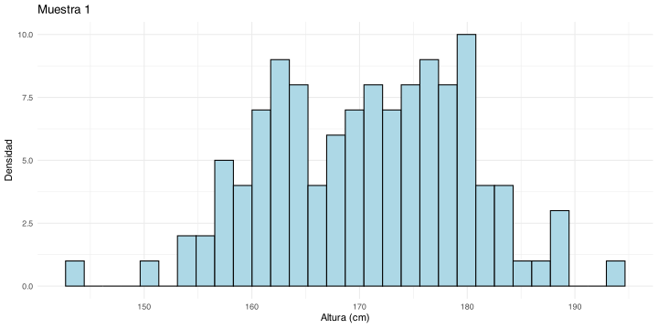
Podemos extraer la media de esta muestra:
[1] 170.7429Podemos recolectar otros 120 datos
Imaginemos que hemos recolectado datos de una primera muestra de 120 personas, obteniendo sus alturas en centímetros.
observación alturas
1 1 136.5332
2 2 174.1863
3 3 155.8392
4 4 176.0232
5 5 155.6674
6 6 165.3986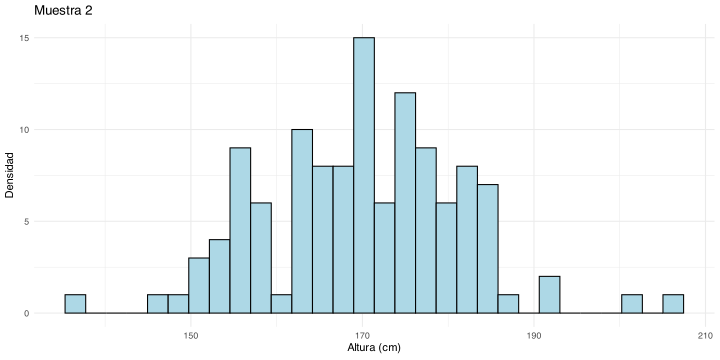
Podemos extraer la media de esta muestra:
[1] 169.9448Podemos repetir este proceso de muestreo muchas veces para obtener múltiples muestras y así calcular la media de cada una. Esto nos permitirá observar cómo varía la media muestral de muestra en muestra y construir la distribución muestral de la media.
En este ejemplo, he generado 50 muestras de 120 personas.
# Parámetros de la población
set.seed(123)
numero_muestras <- 50
tamaño_muestra <- 120
media_poblacion <- 170
sd_poblacion <- 10
# Almacenaremos las medias de cada muestra
medias_muestrales <- numeric(numero_muestras)
# Generación de las 50 muestras y cálculo de medias
for (i in 1:numero_muestras) {
alturas <- rnorm(tamaño_muestra, mean = media_poblacion, sd = sd_poblacion)
medias_muestrales[i] <- mean(alturas)
} [1] 170.1544 169.7380 170.8635 170.2356 170.0972 168.8613 170.4026 171.4058
[9] 170.5223 169.9030 169.7423 169.8366 171.3686 170.6401 169.9608 170.8007
[17] 170.6227 168.1252 168.7881 170.4628 170.0155 170.7018 168.4767 170.6914
[25] 170.7898 169.2718 169.7811 169.9039 170.5217 170.1457 169.6884 168.1856
[33] 171.6336 169.2822 169.7794 169.8715 170.4480 169.5733 170.2067 169.4459
[41] 169.6532 169.0059 170.2424 170.2214 169.6113 170.8416 169.7628 171.1970
[49] 170.1087 171.0459Finalmente, lo podemos graficar.
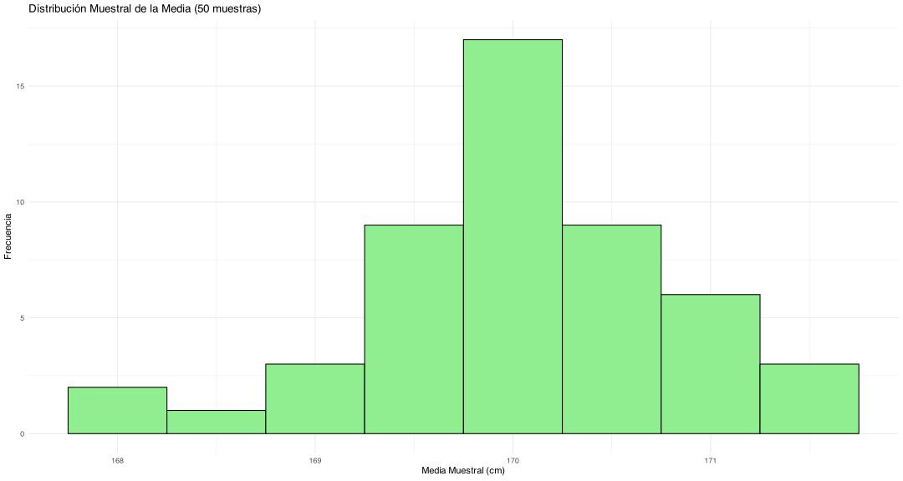
Este gráfico muestra la distribución muestral de la media, es decir, cómo se distribuyen las medias de las 50 muestras alrededor de la media de la población (170 cm). Es importante no confundir este histograma con uno que representa la distribución de la variable original (las alturas individuales). En este caso, el histograma no representa las alturas de cada persona, sino las medias de diferentes muestras de 120 personas cada una.
¿Notas algo particular? Aunque aun son muy pocas las muestras tomadas, puedes observar que la concentración de estas medias en torno a un valor central donde, aunque cada muestra puede variar, las medias tienden a agruparse alrededor de la media poblacional.
Ahora con 1000 muestras.
# Parámetros de la población
set.seed(123)
numero_muestras <- 1000
tamaño_muestra <- 120
media_poblacion <- 170
sd_poblacion <- 10
# Almacenaremos las medias de cada muestra
medias_muestrales <- numeric(numero_muestras)
# Generación de las 1000 muestras y cálculo de medias
for (i in 1:numero_muestras) {
alturas <- rnorm(tamaño_muestra, mean = media_poblacion, sd = sd_poblacion)
medias_muestrales[i] <- mean(alturas)
}
# Crear un data frame a partir de las medias muestrales
medias_df <- data.frame(media_muestral = medias_muestrales)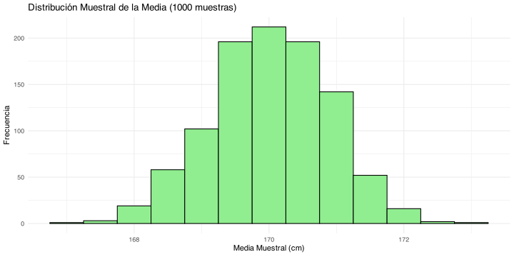
Teorema del límite central
Exacto, lo que estamos observando es un fenómeno descrito por el Teorema del Límite Central (TLC). Este teorema afirma que, si tomamos suficientes muestras grandes de una población, la distribución de sus medias tenderá a ser aproximadamente normal, independientemente de la forma de la distribución original de los datos.
Aquí es donde el TLC es especialmente valioso. En la práctica, los datos de una población pueden tener cualquier forma: podrían ser altamente asimétricos, como los ingresos de una población, donde la mayoría de las personas tiene ingresos bajos y unos pocos tienen ingresos muy altos. También podríamos encontrarnos con distribuciones con múltiples picos o incluso distribuciones muy sesgadas en una dirección. Sin embargo, el TLC nos asegura que, aunque la forma original de los datos sea irregular o no normal, la distribución de las medias de muchas muestras grandes se aproximará a una distribución normal.
Pero te preguntarás, ¿por qué hemos hecho tantas simulaciones de muestras? ¿No es que, en la práctica, solo tenemos acceso a una única muestra? La razón es que este ejercicio con múltiples muestras nos permite visualizar y comprender cómo se comportaría la media muestral si pudiéramos repetir el proceso de muestreo muchas veces, aunque en la realidad usualmente solo tengamos una muestra.
El Teorema del Límite Central nos da la seguridad de que, con una muestra suficientemente grande, la media de esa única muestra se aproximará razonablemente bien a la media de la población, sin necesidad de repetir el muestreo varias veces. Esta teoría es la base de muchas herramientas estadísticas que usamos para hacer inferencias sobre las características de la población (parámetros) a partir de la información de las muestras (estadísticos). En esencia, nos evita tener que recolectar múltiples muestras en la práctica, porque sabemos (gracias al TLC) que el promedio de nuestra muestra es un estimador confiable de la media poblacional.
Así, aunque en este ejercicio hicimos simulaciones para observar el proceso y entender cómo se construye la distribución muestral, el Teorema del Límite Central nos permite inferir el comportamiento de la población completa usando solo una muestra.
[
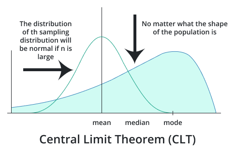
Este conocimiento abre la puerta a una serie de herramientas estadísticas que se basan en la suposición de que la distribución de nuestras estimaciones (como la media muestral) tiende a una forma normal cuando el tamaño de la muestra es suficientemente grande.
Gracias al Teorema del Límite Central, podemos aplicar métodos de inferencia estadística, como los intervalos de confianza y las pruebas de hipótesis, para hacer estimaciones sobre parámetros poblacionales. Estos métodos se basan en la aproximación de la distribución muestral a una distribución normal cuando el tamaño de la muestra es suficientemente grande. Esto nos permite determinar intervalos de confianza y regiones de rechazo en pruebas de hipótesis (más sobre esto en el próximo capítulo).
Sabemos que la distribución normal está definida por dos parámetros fundamentales: la media y la desviación estándar, representadas como \(\mu\) y \(\sigma\), respectivamente. La media \(\mu\) indica el centro de la distribución, mientras que la desviación estándar \(\sigma\) mide la dispersión de los datos alrededor de esa media. Cuando realizamos múltiples simulaciones de muestras y calculamos sus estadísticas (como la media muestral \(\bar{x}\)), observamos que estas estadísticas siguen una distribución muestral.
Aquí tienes una versión mejorada y más clara del párrafo, con un tono más explicativo y fluido:
En este contexto, es importante comprender la diferencia entre la media de la población (\(\mu\)) y la media muestral (\(\bar{x}\)). La media poblacional \(\mu\) es un valor fijo y desconocido que queremos estimar, mientras que la media muestral \(\bar{x}\) es el promedio de los datos en una muestra y puede variar de una muestra a otra. Sin embargo, gracias al Teorema del Límite Central, sabemos que si tomamos muchas muestras y calculamos sus medias, estas medias muestrales (\(\bar{x}\)) seguirán una distribución en torno a \(\mu\). En otras palabras, aunque cada muestra pueda producir una media ligeramente diferente, en promedio, la media muestral estará muy cerca de la media poblacional.
Pero, ¿qué tan cerca está realmente \(\bar{x}\) de \(\mu\) en cada caso? Para responder a eso usamos el concepto de error estándar. El error estándar no es más que la desviación estándar de la distribución de \(\bar{x}\), y nos dice qué tan dispersas están las medias muestrales alrededor de la media poblacional. Se calcula así:
\[ \text{Error estándar} = \frac{\sigma}{\sqrt{n}} \]
si conocemos la desviación estándar de la población (\(\sigma\)).
Sin embargo, en la mayoría de los casos no conocemos \(\sigma\), ya que es un parámetro poblacional desconocido. En estos casos, usamos la desviación estándar de la muestra (\(s\)) como una aproximación de \(\sigma\). Al hacer esto, estamos introduciendo una pequeña incertidumbre adicional, porque ahora nuestra estimación depende de dos valores estimados: la media muestral (\(\bar{x}\)) y la desviación estándar muestral (\(s\)). En este caso, el error estándar se calcula como:
\[ \text{Error estándar} = \frac{s}{\sqrt{n}} \]
Por tanto, el error estándar nos ayuda a entender qué tanta variabilidad hay en las medias muestrales y, por lo tanto, qué tan confiable es nuestra estimación de \(\mu\) usando \(\bar{x}\). Un error estándar más pequeño significa que nuestras medias muestrales están más agrupadas alrededor de \(\mu\), lo que nos da mayor confianza en nuestra estimación.
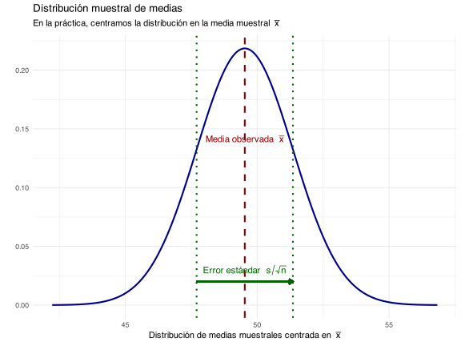
Flor y el uso de las redes sociales
Flor está interesada en analizar cuántas horas a la semana dedica un peruano adulto al uso de redes sociales. Para llevar a cabo este análisis, utilizó los resultados de una encuesta aplicada a 2000 personas, cuyos datos se encuentran en un archivo llamado internet.csv.
Primero, Flor carga todas las librerías necesarias para su análisis e importa el archivo en R. Verifica las primeras filas para asegurarse de que los datos están organizados correctamente:
# A tibble: 6 × 1
tiempo
<dbl>
1 18
2 28
3 13
4 21
5 32
6 23Cada fila del archivo representa el tiempo (en horas por semana) que una persona dedica a redes sociales. Las primeras respuestas observadas fueron: 18, 28, 13, 21, 32 y 23 horas.
Luego, procede a calcular estadísticas descriptivas que resumen los datos:
vars n mean sd median trimmed mad min max range skew kurtosis se
X1 1 2000 21.75 5.84 21 21.23 5.93 11 53 42 1.01 1.66 0.13Los resultados muestran lo siguiente:
- Promedio (\(\bar{x}\)): ( 21.75 ) horas/semana. En promedio, un adulto peruano dedica 21.75 horas semanales a redes sociales.
- Desviación estándar (\(s\)): ( 5.84 ) horas. Esto indica cuánto varían las respuestas en torno al promedio.
- Mediana: (21) horas. Esto significa que la mitad de los encuestados dedica menos de 21 horas a las redes sociales, y la otra mitad más.
- Mínimo y máximo: Los valores oscilan entre (11 y (53) horas, con un rango de ( 42 ) horas.
- Asimetría positiva: La asimetría (\(skew = 1.01\)) indica que algunos encuestados pasan muchas más horas que el promedio en redes sociales.
Flor utiliza un histograma para comprender mejor la distribución de las horas dedicadas a redes sociales:
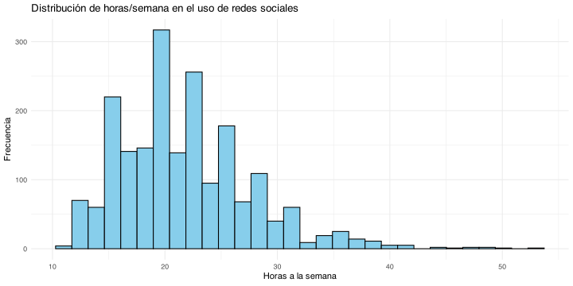
El histograma revela que la distribución es asimétrica hacia la derecha, con más personas concentradas en valores cercanos al promedio, pero con algunos valores altos que extienden la cola hacia la derecha.
Para enfatizar esta asimetría, Flor añade líneas que marcan el promedio y la mediana:
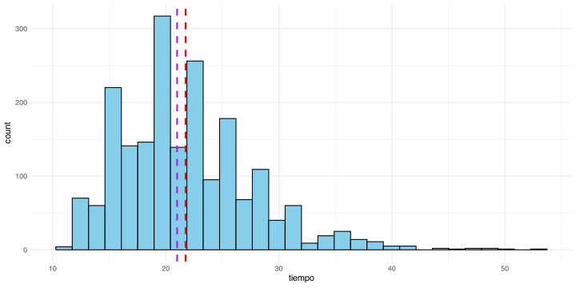
La línea roja (promedio) está ligeramente por encima de la línea púrpura (mediana), confirmando la asimetría positiva.
Flor sabe que, según el Teorema del Límite Central, si se toman muchas muestras de un tamaño lo suficientemente alto (\(n = 2000\)) con respecto a la población, las medias de esas muestras seguirán una distribución aproximadamente normal, incluso si los datos originales (en este caso, las horas semanales dedicadas a redes sociales) no tienen una distribución normal. Es decir, aunque las respuestas individuales puedan variar y estar distribuidas de forma asimétrica, las medias de múltiples muestras tenderán a concentrarse cerca de un valor central.
Para entender mejor esta idea y calcular cuánta variación esperaríamos en estas medias si repitiera el estudio, Flor necesita calcular el error estándar. El error estándar es la medida que nos dice cuánto podría variar la media de una muestra debido a la aleatoriedad de los datos. Se calcula utilizando la fórmula:
\[ \text{Error estándar (EE)} = \frac{s}{\sqrt{n}} \]
Donde:
\(s = 5.84\) es la desviación estándar.
\(n = 2000\) es el tamaño de la muestra.
En R, Flor utiliza:
[1] 0.1306164El error estándar resultante es 0.13 horas. Esto significa que si Flor repitiera esta encuesta muchas veces, las medias de cada muestra variarían en promedio \(0.13\) horas alrededor del valor verdadero.
Para ilustrar el concepto del Teorema del Límite Central, Flor simula la distribución de las medias muestrales. En R, utiliza la función rnorm para generar 10,000 medias muestrales basadas en: - \(\text{mean} = 21.75\), el promedio muestral. - \(\text{sd} = 0.13\), el error estándar de la media.
Para ello, utiliza rnorm, en el cual: - n = 10000: Genera 10,000 valores simulados. - mean = 21.75: La media esperada. - sd = 0.13: El error estándar, que representa la variación esperada de las medias muestrales.
Flor luego visualiza esta distribución de medias muestrales:
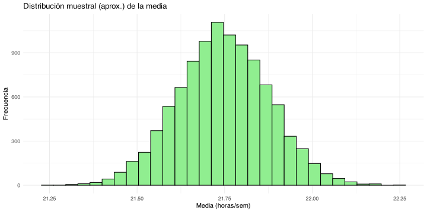
El histograma resultante muestra una distribución normal centrada en \(21.75\) horas con una dispersión reducida (\(0.13\) horas).

La probabilidad representa la base fundamental de la estadística inferenical
Resumen del capítulo
La inferencia estadística permite ir más allá del análisis descriptivo y realizar generalizaciones sobre una población a partir de una muestra. Esto se logra aplicando la probabilidad para modelar la incertidumbre en los datos y predecir comportamientos futuros. La probabilidad puede entenderse como una proporción que mide la frecuencia esperada de un evento en relación con el total de posibles resultados. Por ejemplo, en un lanzamiento de moneda, la probabilidad de obtener cara es \(\frac{1}{2}\), lo que equivale al 50%.
La probabilidad también se puede interpretar en términos de frecuencia relativa a largo plazo, lo que significa que la estimación de la probabilidad mejora conforme se repite un experimento muchas veces. En un dado justo, cada cara tiene la misma probabilidad de salir, pero si se lanza un número reducido de veces, la frecuencia observada puede diferir de la probabilidad teórica. Sin embargo, a medida que el número de lanzamientos aumenta, la frecuencia relativa de cada resultado se aproxima a su probabilidad teórica. Este comportamiento se conoce como la Ley de los Grandes Números y fundamenta la validez de los cálculos probabilísticos en situaciones reales.
Las distribuciones de probabilidad describen cómo se comportan los resultados de un experimento aleatorio. En el caso de una distribución uniforme, cada resultado tiene la misma probabilidad de ocurrir, como en un dado no trucado. Sin embargo, en muchos casos los eventos no tienen probabilidades iguales, lo que lleva a distribuciones más complejas como la binomial, que modela el número de éxitos en una serie de ensayos independientes con dos posibles resultados (éxito o fracaso), y la distribución de Poisson, que describe la frecuencia con la que ocurren eventos en un intervalo de tiempo o espacio.
Entre todas las distribuciones, la normal tiene una importancia fundamental. Su forma de campana es simétrica y se caracteriza por dos parámetros: la media (\(\mu\)), que indica el centro de la distribución, y la desviación estándar (\(\sigma\)), que mide la dispersión de los valores alrededor de la media. La regla empírica establece que aproximadamente el 68% de los valores se encuentran dentro de una desviación estándar de la media, el 95% dentro de dos desviaciones y el 99.7% dentro de tres.
Existen funciones específicas en R para trabajar con distribuciones de probabilidad. Las funciones dxxx, pxxx, qxxx y rxxx permiten, respectivamente, calcular densidades de probabilidad, probabilidades acumuladas, valores críticos y generar datos aleatorios de una distribución dada. Por ejemplo, en la distribución normal, pnorm(x, mean, sd) permite calcular la probabilidad de obtener un valor menor o igual a \(x\), mientras que qnorm(p, mean, sd) encuentra el valor que corresponde a un percentil específico dentro de la distribución.
El valor z es una medida estandarizada que permite comparar valores de distintas distribuciones. Se calcula como la diferencia entre un valor y la media, dividida por la desviación estándar:
\[ z = \frac{x - \mu}{\sigma} \]
Un valor z positivo indica que el dato está por encima de la media, mientras que un valor negativo indica que está por debajo. Gracias a la simetría de la distribución normal, se pueden usar tablas de valores z o funciones en R para calcular probabilidades acumuladas y valores críticos, lo que resulta útil en pruebas de hipótesis y análisis inferenciales.
Cuando se trabaja con muestras extraídas de una población, la distribución muestral describe la variabilidad de un estadístico como la media. Aunque diferentes muestras pueden producir medias distintas, estas siguen un patrón predecible, lo que permite hacer inferencias sobre la población. Aquí entra en juego el Teorema del Límite Central, que establece que, independientemente de la forma de la distribución original, la distribución de las medias muestrales tiende a una distribución normal cuando el tamaño de la muestra es suficientemente grande. Este principio es crucial porque justifica el uso de métodos estadísticos basados en la normalidad, incluso cuando los datos individuales no siguen una distribución normal.
El error estándar permite cuantificar la variación de la distribución muestral y es fundamental para la consutrucción de herrmaientas inferenciales como la estimación y el contraste de hipó. Se calcula como la desviación estándar dividida por la raíz del tamaño de la muestra:
\[ \text{Error estándar} = \frac{\sigma}{\sqrt{n}} \]
Este valor indica la variabilidad esperada en la media muestral si se tomaran múltiples muestras de la misma población. Un error estándar pequeño sugiere que la media muestral es un buen estimador de la media poblacional. En la práctica, cuando la desviación estándar de la población es desconocida, se usa la desviación estándar de la muestra (\(s\)) como una aproximación.
En estudios aplicados, la inferencia estadística se basa en la distribución muestral para estimar parámetros poblacionales y hacer afirmaciones sobre una población a partir de una muestra. Gracias al Teorema del Límite Central, se puede asumir que la distribución de las medias muestrales es aproximadamente normal, lo que permite calcular intervalos de confianza y realizar pruebas de hipótesis con fundamentos matemáticos sólidos.
Ejercicios
1. Se lanza un dado justo de seis caras. Queremos calcular la probabilidad de obtener un número mayor a 4 en un solo lanzamiento. ¿Cuál es la probabilidad de este evento?
- \(\frac{4}{6}\) (0.6667)
- \(\frac{2}{6}\) (0.3333)
- \(\frac{1}{6}\) (0.1667)
- \(\frac{3}{6}\) (0.5000)
2. En una población donde las alturas de los adultos siguen una distribución normal con media \(\mu = 170\text{ cm}\) y desviación estándar \(\sigma = 10\text{ cm}\), ¿entre qué valores se encuentra aproximadamente el 68% de las alturas según la Regla Empírica?
- 150 cm y 190 cm
- 165 cm y 175 cm
- 160 cm y 180 cm
- 155 cm y 185 cm
3. Si una distribución normal tiene media \(\mu = 150\) y desviación estándar \(\sigma = 20\), ¿qué porcentaje de los datos se encuentra por debajo de \(x = 90\)? Usa la Regla Empírica y considera la acumulación de probabilidades a ambos lados.
- 0.3%
- 0.13%
- 2.5%
- 5%
4. Las alturas de los hombres adultos en una región siguen una distribución normal con media \(\mu = 175\text{ cm}\) y desviación estándar \(\sigma = 10\text{ cm}\). ¿Cuál es la probabilidad de que un hombre seleccionado al azar mida menos de 165 cm?
- 0.1587 (15.87%)
- 0.3413 (34.13%)
- 0.5000 (50.00%)
- 0.8413 (84.13%)
5. En una distribución normal con media \(\mu = 175\text{ cm}\) y desviación estándar \(\sigma = 10\text{ cm}\), ¿qué altura corresponde al percentil 95, es decir, el valor por debajo del cual se encuentra el 95% de la población?
- 185.25 cm
- 190.45 cm
- 195.30 cm
- 200.75 cm
6. Flor realizó una encuesta a 2000 personas para medir el tiempo promedio que pasan en redes sociales. El promedio fue de 21.75 horas por semana, con una desviación estándar muestral de \(s = 5.84\) horas. ¿Cuál es el error estándar de la media en esta encuesta? Recuerda que el error estándar de la media se calcula como \(\frac{s}{\sqrt{n}}\).
- 0.10 horas
- 0.30 horas
- 0.25 horas
- 0.13 horas
7. Se simulan 1000 muestras de tamaño \(n = 30\), provenientes de una población con media \(\mu = 50\) y desviación estándar \(\sigma = 10\). Según el Teorema del Límite Central, ¿cómo se comportará la distribución de las medias muestrales?
- Tendrá una media de 50 y una desviación estándar de 10.
- Tendrá una media de 50 y una desviación estándar de \(\frac{10}{\sqrt{30}}\).
- Tendrá una media de 50 y una desviación estándar de \(\sqrt{30}\).
- No se puede determinar sin más información.
8. Si las puntuaciones de un examen de matemáticas siguen una distribución normal con media \(\mu = 75\) y desviación estándar \(\sigma = 8\), ¿qué porcentaje de estudiantes obtienen una puntuación entre 67 y 83 puntos?
- 34.13%
- 68.26%
- 84.13%
- 95.44%
9. Dos estudiantes realizan pruebas en diferentes universidades. En la universidad de Ana, la media de los puntajes es 500 con una desviación estándar de 100, mientras que en la universidad de Juan, la media es 75 con una desviación estándar de 10. Si Ana obtiene 650 y Juan obtiene 85, ¿quién tuvo un desempeño relativamente mejor en su universidad? Recuerda usar la puntuación estandarizada: \(z = \frac{x - \mu}{\sigma}\).
- Ana
- Juan
- Ambos tuvieron el mismo desempeño relativo
- No se puede determinar sin más información
10. ¿Cuál de las siguientes afirmaciones describe mejor el principio de la Ley de los Grandes Números?
- A medida que aumenta el número de repeticiones de un experimento aleatorio, la frecuencia relativa de un evento se aproxima a su probabilidad teórica.
- Si un evento ocurre varias veces seguidas, su probabilidad de ocurrencia en el siguiente intento disminuye.
- Una muestra grande siempre sigue una distribución normal, sin importar la distribución original.
- La probabilidad de un evento se mantiene constante sin importar cuántas veces se repita el experimento.
11. El número de autos que llegan a una estación de servicio en una hora sigue una distribución de Poisson con una media de 5 autos por hora. ¿Cuál es la probabilidad de que en la próxima hora lleguen exactamente 3 autos?
- 0.1404
- 0.2650
- 0.6159
- 0.8571
12.¿Cuál de los siguientes ejemplos se modela mejor con una distribución discreta?
- La cantidad de estudiantes que llegan tarde a clase en un día.
- La temperatura promedio diaria en una ciudad.
- La cantidad de lluvia caída en un mes en milímetros.
- La distancia recorrida por un atleta en una maratón.
13. Un semáforo permanece en luz verde durante 40 segundos, luego cambia a rojo por otros 40 segundos. Si una persona llega a un semáforo en un momento aleatorio del ciclo, ¿cuál es la probabilidad de que deba esperar?
- 0.25
- 0.50
- 0.75
- 1.00
14. ¿Cuál de los siguientes eventos se modela mejor con una distribución binomial?
- El tiempo de espera en una fila del banco.
- La cantidad de clientes que llegan a una tienda en una hora.
- La variación en la velocidad del viento en un día.
- El número de respuestas correctas en un examen de opción múltiple con 10 preguntas.
15. Si un estudiante obtiene una calificación de 85 en un examen donde la media es 75 y la desviación estándar es 5, ¿cuál es su puntaje en valor z?
- 1.00
- 2.00
- -1.00
- -2.00